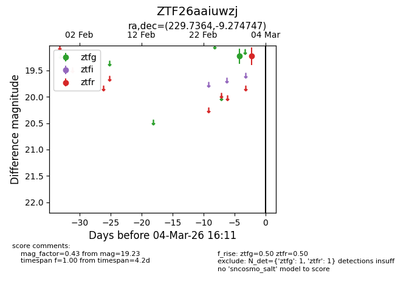
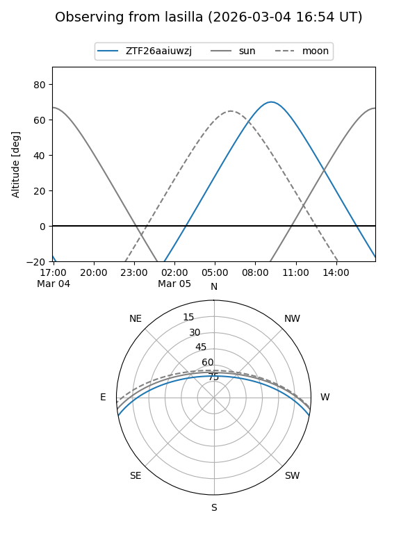
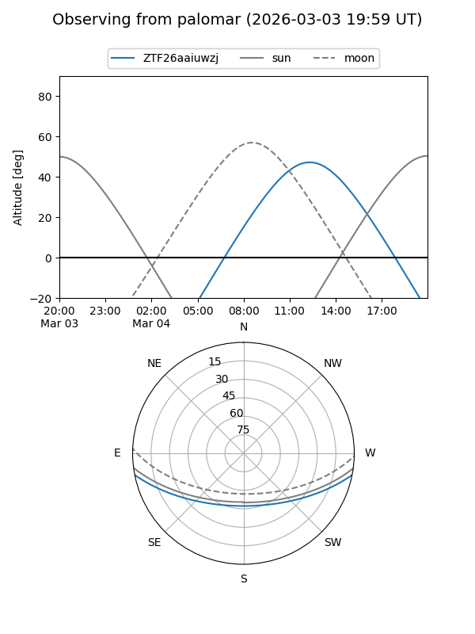

ZTF26aaiuwzj
Target ZTF26aaiuwzj at 2026-03-04 16:15
Aliases and brokers:
FINK: link
Lasair: link
ALeRCE: link
alt names
ZTF26aaiuwzj (ztf,fink_ztf)
Coordinates:
equatorial (ra, dec) = 229.7364,-9.27475
equatorial (HMS+DMS) = 15:18:56.73,-09:16:29.09
galactic (l, b) = (352.5669,+38.98581)
Flags:
Photometry:
last ztfg=19.23, ztfr=19.23
1 ztfg, 1 ztfr detections
Lightcurve

Visibility


Additional plots